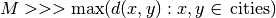
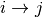
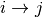

9.6. The TSP in or-tools
The RL is particularly well-suited to model a TSP. We start with a minimalistic implementation to show that a basic TSP can be coded in a few lines. Next, we develop a more realistic approach to solve the TSP. Our instances can be randomly generated or read from TSPLIB format files. Finally, we show how to avoid the use of a complete graph if the input graph is not complete and compare the classical big M approach with a more appropriate CP-based approach where the variables domains take the input graph into account.
9.6.1. Minimalistic implementation
C++ code: tutorials/cplusplus/chap9/tsp_minimal.cc
Only a few lines of codes are needed to solve the TSP with the help of the RL:
#include <iostream>
#include "constraint_solver/routing.h"
using operations_research;
// Cost function
int64 MyCost(RoutingModel::NodeIndex from, RoutingModel::NodeIndex to) {
...
return ...;
}
int main(int argc, char **argv) {
RoutingModel TSP(42, 1);// 42 nodes, 1 vehicle
TSP.SetCost(NewPermanentCallback(MyCost));
const Assignment * solution = TSP.Solve();
// Solution inspection
if (solution != NULL) {
std::cout << "Cost: " << solution->ObjectiveValue() << std::endl;
for (int64 index = TSP.Start(0); !TSP.IsEnd(index);
index = solution->Value(TSP.NextVar(index))) {
std::cout << TSP.IndexToNode(index) << " ";
}
std::cout << std::endl;
} else {
std::cout << "No solution found" << std::endl;
}
return 0;
}
Given an appropriate cost function, a TSP can be modelled and solved in 3 lines:
RoutingModel TSP(42, 1);// 42 nodes, 1 vehicle
TSP.SetCost(NewPermanentCallback(MyCost));
const Assignment * solution = TSP.Solve();
The cost function is given as a callback to the routing solver through its SetCost() method. Other alternatives are possible and will be detailed in the next sections.
9.6.2. Basic implementation
C++ code: tutorials/cplusplus/chap9/tsp.cc
This time we use the TSPData (see The TSPData class) and TSPEpixData (see Visualization with ePix) classes to read TSP instances and write TSP solutions in TSPLIB format.
We use also several parameters to guide the search.
9.6.2.1. Headers
We start by including the relevant headers:
#include <string>
#include <fstream>
#include "base/commandlineflags.h"
#include "constraint_solver/routing.h"
#include "base/join.h"
#include "tsp.h"
#include "tsp_epix.h"
base/join.h contains the StrCat() function that we use to concatenate strings. tsp.h contains the definition and declaration of the TSPData class to read TSPLIB format instances and write TSPLIB format solution files while tsp_epix.h contains the TSPEpixData class to visualize TSP solutions. Under the hood, tsp.h includes the header tsplib.h that gathers the keywords, distance functions and constants from the TSPLIB. You should consider tsp.h and tsplib.h as one huge header file. tsp_epix.h is only needed if you want to use the ePiX library to visualize TSP solutions. tsp_epix.h depends on tsp.h (and thus tsplib.h).
9.6.2.2. Parameters
Several command line parameters are defined in the files tsp.h, tsplib.h, tsp_epix.h and tsp.cc:
| File | Parameter | Description | Default value |
|---|---|---|---|
| tsp.h | tsp_deterministic_random_seed | Use deterministic random seeds or not? | true |
| tsp_use_symmetric_distances | Generate a symmetric TSP instance or not? | true | |
| tsp_min_distance | Minimum allowed distance between two nodes. | 10 | |
| tsp_max_distance | Maximum allowed distance between two nodes. | 100 | |
| tsp_epix.h | tsp_epix_width | Width of the pictures in cm. | 10 |
| tsp_epix_height | Height of the pictures in cm. | 10 | |
| tsp_epix_labels | Print labels or not? | false | |
| tsp.cc | tsp_size | Size of TSP instance. If 0, must be read from a TSPLIB file. | 0 |
| tsp_depot | The starting node of the tour. | 1 | |
| tsp_data_file | Input file with TSPLIB data. | empty string | |
| tsp_distance_matrix_file | Output file with distance matrix. | empty string | |
| tsp_width_size | Width size of fields in output files. | 6 | |
| tsp_solution_file | Output file with generated solution in TSPLIB format. | empty string | |
| tsp_epix_file | ePiX solution file. | empty string | |
| tsp_time_limit_in_ms[1] | Time limit in ms, 0 means no limit. | 0 | |
| tsp_print_timing | Print timing information? | false | |
| tsp_check_solution | Check the solution for feasibility? | true |
| [1] | This flag is redundant. A routing_time_limit flag is provided in routing.cc but we wanted to underline the fact that this limit is given in milliseconds. |
9.6.2.3. Command line parameters read from a file
When parameters start to pile up, writing them every time on the command line isn’t very practical. The gflags library provides the possibility to load the parameters from a text file. For instance, a parameters file tsp_parameters.txt for our TSPData class might look like this:
--tsp_depot=2
--deterministic_random_seed=true
--use_symmetric_distances=true
--min_distance=23
--max_distance=748
--tsp_initial_heuristic=PathCheapestArc
--tsp_size=101
--tsp_solution_file=tsp_sol.txt
You can read this file with the flagfile flag:
./tsp --flagfile=tsp_parameters.txt
which outputs the following file tsp_sol.txt on our system:
NAME : tsp_sol.txt
COMMENT : Automatically generated by TSPData (obj: 3948)
TYPE : TOUR
DIMENSION : 101
TOUR_SECTION
2
14
63
...
33
44
-1
9.6.2.4. The main function
Here is the main function:
int main(int argc, char **argv) {
std::string usage("...");
usage += argv[0];
usage += " -tsp_size=<size>\n\n";
usage += argv[0];
usage += " -tsp_data_file=<TSPLIB file>";
google::SetUsageMessage(usage);
google::ParseCommandLineFlags(&argc, &argv, true);
operations_research::TSPData tsp_data;
if (FLAGS_tsp_size > 0) {
tsp_data.RandomInitialize(FLAGS_tsp_size);
} else if (FLAGS_tsp_data_file != "") {
tsp_data.LoadTSPLIBFile(FLAGS_tsp_data_file);
} else {
google::ShowUsageWithFlagsRestrict(argv[0], "tsp");
exit(-1);
}
operations_research::TSP(tsp_data);
return 0;
}
We start by writing the usage message that the user will see if she doesn’t know what to do. Next, we declare a TSPData object that will contain our TSP instance. As usual, all the machinery is hidden in a function declared in the operations_research namespace: TSP().
9.6.2.5. The TSP() function
We only detail the relevant parts of the TSP() function. First, we create the CP solver:
const int size = data.Size();
RoutingModel routing(size, 1);
routing.SetCost(NewPermanentCallback(&data, &TSPData::Distance));
The constructor of the RoutingModel class takes the number of nodes (size) and the number of vehicle (1) as parameters. The distance function is encoded in the TSPData object given to the TSP() function.
Next, we define some parameters:
// Disabling Large Neighborhood Search, comment out to activate it.
routing.SetCommandLineOption("routing_no_lns", "true");
if (FLAGS_tsp_time_limit_in_ms > 0) {
routing.UpdateTimeLimit(FLAGS_tsp_time_limit_in_ms);
}
Because Large Neighborhood Search (LNS) can be quite slow, we deactivate it.
To define the depot, we have to be careful as, internally, the CP solver starts counting the nodes from 0 while in the TSPLIB format the counting starts from 1:
if (FLAGS_start_counting_at_1) {
CHECK_GT(FLAGS_tsp_depot, 0) << " Because we use the " <<
"TSPLIB convention, the depot id must be > 0";
}
RoutingModel::NodeIndex depot(FLAGS_start_counting_at_1 ?
FLAGS_tsp_depot -1 : FLAGS_tsp_depot);
routing.SetDepot(depot);
Notice that we also have to cast an int32 into a RoutingModel::NodeIndex.
Now that the instance and the parameters are accepted by the CP solver, we invoke its Solve() method:
const Assignment* solution = routing.Solve();
Notice that the Solve() method returns a pointer to a const Assigment.
The inspection of the solution is done as usual:
if (solution != NULL) {
// test solution
if (!data.CheckSolution(routing, solution)) {
LOG(ERROR) << "Solution didn't pass the check test.";
} else {
LG << "Solution did pass the check test.";
}
// Solution cost.
LG << "Cost: " << solution->ObjectiveValue();
// Inspect solution.
string route;
const int route_nbr = 0;
for (int64 node = routing.Start(route_nbr);
!routing.IsEnd(node);
node = solution->Value(routing.NextVar(node))) {
//LG << node;
route = StrCat(route, StrCat((FLAGS_start_counting_at_1 ?
routing.IndexToNode(node).value() + 1 :
routing.IndexToNode(node).value()), " -> "));
}
route = StrCat(route, (FLAGS_start_counting_at_1 ?
routing.IndexToNode(routing.End(route_nbr)).value() + 1 :
routing.IndexToNode(routing.End(route_nbr)).value()));
LG << route;
} else {
LG << "No solution found.";
}
We use the method CheckSolution() of the TSPData class to ensure that the solution returned by the CP Solver is valid. This method only checks if every node has been used only once in the tour and if the objective cost matches the objective value of the tour.
9.6.3. How to avoid some edges?
The classical way to deal with forbidden arcs between two cities when an algorithm expects a complete graph as input
is to assign a large value  to these arcs. Arcs with such a large distance will never be
chosen[2]. can be considered as infinity.
to these arcs. Arcs with such a large distance will never be
chosen[2]. can be considered as infinity.
In Constraint Programming, we can deal with forbidden arcs more elegantly: we simply remove the forbidden values from
the variable domains. We’ll use both techniques and compare them. First, we have to define . We suppose
that [3] and we take
the largest allowed value kint64max.
| [2] | Actually, when permitted, an arc  with a distance is often replaced by a
shortest path  and its value is the length of the shortest path between with a distance is often replaced by a
shortest path  and its value is the length of the shortest path between  and
and  . One drawback is that you have to keep in memory
the shortest paths used (or recompute them) but it is often more efficient than using the large value. . One drawback is that you have to keep in memory
the shortest paths used (or recompute them) but it is often more efficient than using the large value. |
| [3] | Loosely speaking, the
expression means that is
much much larger that the largest distance between two cities. |
We have implemented a RandomForbidArcs() method in the TSPData class to randomly forbid a percentage of arcs:
void RandomForbidArcs(const int percentage_forbidden_arcs);
This method alters the existing distance matrix and replaces the distance of forbidden arcs by the flag M:
DEFINE_int64(M, kint64max, "Big m value to represent infinity");
We have also defined a flag to switch between the two techniques and a flag for the percentage of arcs to forbid randomly in the file tsp_forbidden_arcs.cc:
DEFINE_bool(use_M, false, "Use big m or not?");
DEFINE_int32(percentage_forbidden_arcs, 20,
"Percentage of forbidden arcs");
The code in RandomForbidArcs() simply computes the number of arcs to forbid and uniformly tries to forbid arcs one after the other:
void RandomForbidArcs(const int percentage_forbidden_arcs) {
CHECK_GT(size_, 0) << "Instance non initialized yet!";
// Compute number of forbidden arcs
CHECK_GE(percentage_forbidden_arcs, 0)
<< "Percentage of forbidden arcs must be >= 0";
double percentage = percentage_forbidden_arcs;
if (percentage > FLAGS_percentage_forbidden_arcs_max) {
percentage = FLAGS_percentage_forbidden_arcs_max;
LG << "Percentage set to "
<< FLAGS_percentage_forbidden_arcs_max
<< " to avoid infinite loop with random numbers";
}
percentage /= 100;
// Don't count the principal diagonal
const int64 total_number_of_arcs = size_ * (size_ - 1) - size_;
const int64 number_of_forbidden_arcs =
(int64) total_number_of_arcs * percentage;
LG << "Forbid randomly " << number_of_forbidden_arcs
<< " arcs on " << total_number_of_arcs << " arcs.";
int64 number_forbidden_arcs_added = 0;
while (number_forbidden_arcs_added < number_of_forbidden_arcs) {
const int64 from = randomizer_.Uniform(size_ - 1);
const int64 to = randomizer_.Uniform(size_ - 1) + 1;
if (from == to) {continue;}
if (matrix_[MatrixIndex(from, to)] > FLAGS_M) {
matrix_[MatrixIndex(from, to)] = FLAGS_M;
VLOG(1) << "Arc (" << from << "," << to
<< ") has a larger value than M!";
++number_forbidden_arcs_added;
continue;
}
if (matrix_[MatrixIndex(from, to)] != FLAGS_M) {
matrix_[MatrixIndex(from, to)] = FLAGS_M;
++number_forbidden_arcs_added;
}
} // while(number_forbidden_arcs_added < number_of_forbidden_arcs)
}
Because our random number generator (as most random number generators) is not completely random and uniform, we need to be sure to exit the while loop. This is why we introduce the gflag:
DEFINE_int32(percentage_forbidden_arcs_max, 94,
"Maximum percentage of arcs to forbid");
We bound the percentage of forbidden arcs by 94% by default.
[TO BE COMPLETED]
Google or-tools |
User's Manual
Google search
Welcome
Tutorial examples
Current chapter
9. Travelling Salesman Problems with constraints: the TSP with time windows
Previous section
9.5. The model behind the scenes: overview